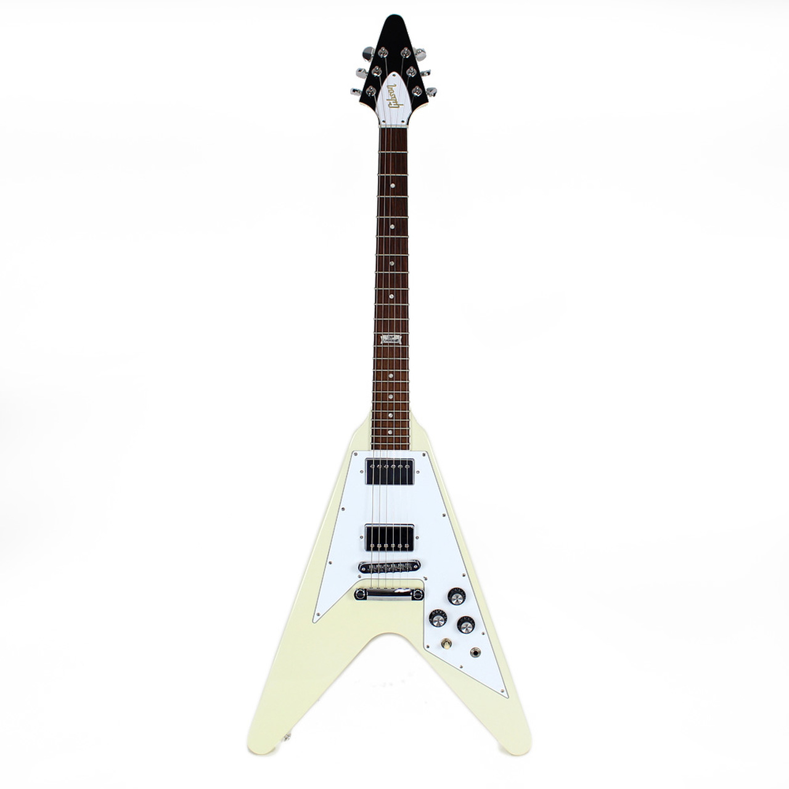

Flying V

The Gibson Flying V is an electric guitar model introduced by Gibson in 1958. The Flying V offered a radical, "futuristic" body design, much like its siblings: the Explorer, which was released the same year and the Moderne, which was designed in 1957 but not released until 1982.
V Bass

In 1981, Gibson produced a four-string bass version of the Flying V. Only 375 were produced, most of them black but a few in alpine white, silverburst, or transparent blue. Epiphone also made V-shaped basses. In late 2011, Gibson re-released the Flying V bass under the Gibson name; it was discontinued again in late 2012.
Reverse Flying V

The Gibson Reverse Flying V was first released as part of Gibson's Guitar of the Week promotion in 2007. It was released as Guitar of the week (week 29) with a Limited run of only 400. To achieve the "reverse" style, the body of the guitar is rotated 180 degrees relative to the original Flying V. It features a single color, a vivid Trans Amber finish with gold-plated hardware, and a string-through tailpiece. The guitar features a solid Mahogany body and neck, rosewood fretboard, a pair of hand-wound '57 Classic pickups, and a single volume knob. The headstock was borrowed from the 1958 Gibson Futura/Explorer patent dated January 7, 1958.
Flying V2

The Gibson Reverse Flying V was first released as part of Gibson's Guitar of the Week promotion in 2007. It was released as Guitar of the week (week 29) with a Limited run of only 400. To achieve the "reverse" style, the body of the guitar is rotated 180 degrees relative to the original Flying V. It features a single color, a vivid Trans Amber finish with gold-plated hardware, and a string-through tailpiece. The guitar features a solid Mahogany body and neck, rosewood fretboard, a pair of hand-wound '57 Classic pickups, and a single volume knob. The headstock was borrowed from the 1958 Gibson Futura/Explorer patent dated January 7, 1958.